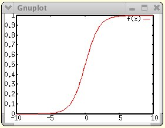

|
|||||||
| [ Home ] | [ Software ] | [ Curriculum ] | [ Hardware ] | [ Community ] | [ News ] | [ Publications ] | [ Search ] |
|
Introduction to Neural NetworksWe will assume that you have already been exposed to neural network modeling. This section is designed to quickly help you recap the basics that you will need in order to create and experiment with neural networks in Pyro. We will concentrate mostly on backpropagation networks here. A typical backprop network is a three layer network containing input, hidden, and output layers. Each layer contains a collection of nodes. Typically, the nodes in a layer are fully connected to the next layer. For instance, every input node will have a weighted connection to every hidden node. Similarly, every hidden node will have a weighted connection to every output node. Processing in a backprop network works as follows. Input is propagated forward from the input layer through the hidden layer and finally through the output layer to produce a response. Each node, regardless of the layer it is in, uses the same transfer function in order to propagate its information forward to the next layer. This is described next.
Transfer Function of a NodeEach node maintains an activation value that depends on the activation values of its incoming neighbors, the weights from its incoming neighbors, and its own default bias value. To compute this activation value, we first calculate the node's net input. The net input is a weighted sum of all the incoming activations plus the node's bias value:
for i in toNodes:
netInput[i] = bias[i]
for j in fromNodes:
netInput[i] += (weight[i][j] * activation[j])
where weight[i][j] is the weight, or connection strength, from the j-th node to the i-th node, activation[j] is the activation signal of the j-th node, and bias[i] is the bias value of the i-th node. After computing the net input, each node has to compute its output activation. The activation function used in backprop networks is generally:
def activationFunction(netInput):
return 1.0 / (1.0 + exp(-netInput))
for i in toNodes:
activation[i] = activationFunction(netInput[i])
This is a sigmoid function, as shown in the plot below. Notice that the function is monotonically increasing and bounded by 0.0 and 1.0 as the net input approaches negative infinity and positive infinity, respectively.  The value that results from applying the activation function to the net input is the signal that will be sent as output to all the nodes in the next layer.
Learning RuleBackprop networks fall under the category of supervised learning schemes. That is, during training, the network is presented a training input, the inputs are propagated using the transfer function, until output appears in the output layer. The output is then compared with the expected or target output and an error is computed. The error is then backpropagated by applying the learning rule. A learning rule modifies the weights between nodes. The backpropagation algorithm, also called the generalized delta rule, systematically changes the weights by using a weight change equation. We use an optional momentum term in the weight change rule to help speed up convergence. The weight change rule is different for weights between the hidden-output layer nodes and the input-hidden layer nodes. For the hidden-output layer nodes it is:
for i in toNodes:
error[i] = (desiredOutput[i] - actualOutput[i])
delta[i] = error[i] * actualOutput[i] * (1 - actualOutput[i])
for j in fromNodes:
weightUpdate[i][j] = (EPSILON * delta[i] * actualOutput[j]) + (MOMENTUM * weightUpdate[i][j])
That is, at the i-th output node, the error is the difference between desired and actual outputs. The weight change between a hidden layer node j and output node i — weight[i][j] — is a fraction of the computed delta value and additionally a fraction of the weight change from the previous training step. MOMENTUM is a constant that ranges between 0.0 and 1.0 and EPSILON is called the learning rate and is also a constant that varies between 0.0 and 1.0. In the above code delta[i] * actualOutput[j] is the partial derivative of the overall error with respect to each weight. This is the slope of error. Thus, backprop changes the weight a tiny portion of the slope of the error. We only know the slope of this curve, not the shape, and thus have to take very small steps. Scott Fahlman did a clever approximation of the second derivative, which allows us to make much larger steps when appropriate. Let:
slope[i][j] = delta[i] * actualOutput[j] If we have a second slope measurement, make an assumption about the curve of the error, then we can change the above backprop update to:
for i in toNodes:
error[i] = (desiredOutput[i] - actualOutput[i])
delta[i] = error[i] * actualOutput[i] * (1 - actualOutput[i])
for j in fromNodes:
slope[i][j] = delta[i] * actualOutput[j]
weightUpdate[i][j] = (slope[i][j] / (prevSlope[i][j] - slope[i])) * weightUpdate[i][j]
prevSlope[i][j] = slope[i][j]
Notice that there are two slope values, slope and prevSlope. This is similar in spirit to Newton's method. It isn't a formally derived equation, like the original backprop, because it makes a couple of assumptions and is an approximation. But in practice it works quickly most of the time. If you don't get a solution quickly, you can reset the weights and try again. Notice that this equation gets rid of epsilon and momentum. However, there are some complications that do require a learning parameter, and so epsilon is reused in a slightly different way. There is no need for momentum now, though. Fahlman called this variation "quickprop" and we will look at both of these learning methods in the following sections.
Training a Neural NetworkGiven a task, how does one train a neural network to do/solve the task? This involves the following steps:
Determining an appropriate architectureRecall that a neural network consists of an input layer, an output layer, and zero or more hidden layers. Once a network has been trained, when you present an input to the network, the network will propagate the inputs through its layers to produce an output (using the transfer function described above). If the input represents an instance of the task, the output should be the solution to that instance after the network has been trained. Thus, one can view a neural network as a general pattern associator. Thus, given a task, the first step is to identify the nature of inputs to the pattern associator. This is normally in the form of number of nodes required to represent the input. Similarly, you will need to determine how many output nodes will be required. For example, consider a simple logical connective, AND whose input-output characteristics are summarized in the table below:
This is a very simple example, but it will help us illustrate all of the important concepts in defining and training neural networks. In this example, it is clear that we will need two nodes in the input layer, and one in the output layer. We can start by assuming that we will not need a hidden layer. In general, as far as the design of a neural network is concerned, you always begin by identifying the size of the input and output layers. Then, you decide how many hidden layers you would use. In most situations you will need one hidden layer, though there are no hard and fast rules about its size. Through much empirical practice, you will develop your own heuristics about this. We will return to this issue later. In the case of the AND network, it is simple enough that we have decided not to use any hidden layers.
Define a data set that will be used for trainingOnce you have decided on the network architecture, you have to prepare the data set that will be used for training. Each item in the data set represents an input pattern and the correct output pattern that should be produced by the network (since this is supervised training). In most tasks, there can be an infinite number of such input-output associations. Obviously it would be impossible to enumerate all associations for all tasks (and it would make little sense to even try to do this!). You have to then decide what comprises a good representative data set that, when used in training a network, would generalize to all situations. In the case of the AND network, the data set is very small, finite (only 4 cases!), and exhaustive. The other issue you have to take into consideration here is that of the range of each input and output value. Remember the transfer function of a node is a sigmoid-function that serves to squash all input values between 0.0 and 1.0. Thus, regardless of the size of each input value into a node, the output produced by each node is between 0.0 and 1.0. This means that all output nodes have values in that range. If the task you are dealing with expects outputs between 0.0 and 1.0, then there is nothing to worry about. However, in most situations, you will need to scale the output values back to the values in the task domain. In reality, it is also a good idea to scale the input values from the domain into the 0.0 to 1.0 range (especially if most input values are outside the -5.0 and 5.0 range). Thus, defining a data set for training almost always requires a collection of input-output pairs, as well as scaling and unscaling operations. Luckily, for the AND task, we do not need to do any scaling, but we will see several examples of this later.
Define the neural network parametersThe next step is to define the parameters required to train the neural network. These include the following:
The learning rate, EPSILON, and the momentum constant, MOMENTUM, have to be between 0.0 and 1.0 and are critical to the overall training algorithm. The appropriate values of these constants are best determined by experimentation. Tolerance (which is also between 0.0 and 1.0) refers to the level of tolerance that is acceptable for determining correctness of the output. For example, if tolerance is set to 0.1, then an output value within 10% of the desired output is considered correct. Other training parameters generally exist to specify the reporting rate of the progress of the training, where to log such progress, etc. We will see specific examples of these as we start working with actual networks. For the AND network, we will set EPSILON to 0.5, MOMENTUM to 0.0, report the progress every 5 epochs (see below).
Train the networkOnce all the parameters are specified, you start the training process. This involves presenting each input pattern to the network, propagating it all the way until an output is produced, comparing the output with the desired target, computing the error, backpropagating the error, and applying the learning rule. This process is repeated until all inputs are exhausted. A single pass through an entire data set is called an epoch. In general, you always train the network for several epochs (can be anywhere from a few hundred to millions!) until the network begins to show more improved and stable performance. Performance of the network is generally measured in terms of the total sum-squared error or TSS for short. This is the error in each pattern squared and summed over all the patterns. Initially, you will notice that the TSS is quite high, but it will slowly decrease as the number of epochs increase. You can either stop the training process after a certain number of epochs have elapsed, or after the TSS has decreased to a specific amount.
Test the trained network
Once the network has been trained, it is time to test it. There are several ways of doing this. Perhaps the easiest is to turn learning off (another training parameter) and then see the outputs produced by the network for each input in the data set. When a trained network is going to be used in a deployed application, all you have to do is save the weights of all interconnections in the network into a file. The trained network can then be recreated at anytime by reloading the weights.
Do post training analysisPerhaps the most important step in using neural networks is the analysis one performs once a network has been trained. There are a whole host of analysis techniques, we will present some of them as we go along. Next, we will introduce you to the Pyro package called, conx that is used to create and experiment with neural networks. We will use the AND network example from this section to learn about conx. Next section: Building Neural Networks using Conx
Further Reading
Next: Building Neural Networks using Conx Up: PyroModuleNeuralNetworks
| ||||||||||||||||||||||
| [ Home ] | [ Software ] | [ Curriculum ] | [ Hardware ] | [ Community ] | [ News ] | [ Publications ] | [ Search ] |
 View Wiki Source | Edit Wiki Source | Mail Webmaster
View Wiki Source | Edit Wiki Source | Mail Webmaster | |||||||